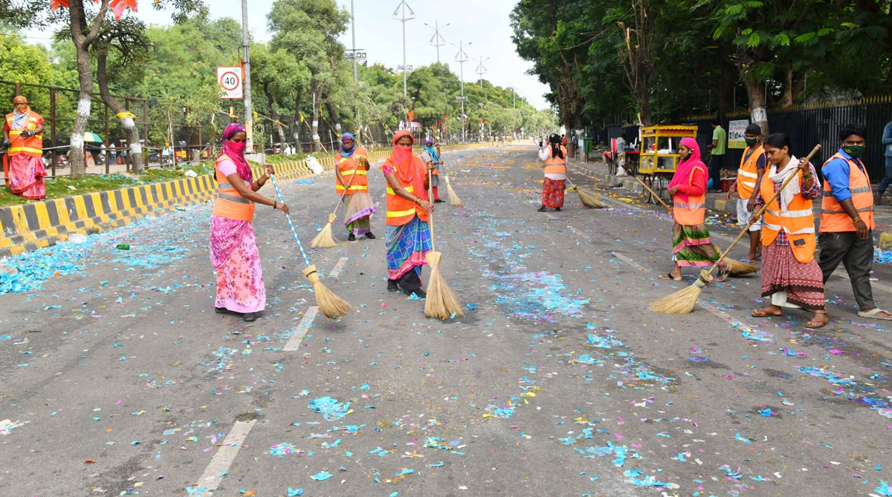

The Swachh Bharat Abhiyan has seen significant progress since its inception, with several initiatives and strategies being implemented at the national, state, and local levels. The government has been actively involved in promoting cleanliness through various programs, funding, and policy interventions. Additionally, public participation and awareness campaigns have played a crucial role in driving the success of the mission.
Swachh Bharat Abhiyan, also known as the Clean India Mission, is a nationwide cleanliness campaign launched in India on 2nd October 2014 by Prime Minister Narendra Modi. The campaign aims to improve the sanitation and cleanliness conditions across the country and create awareness among the general public about the importance of cleanliness in their day-to-day lives.
Swachh Bharat Abhiyan focuses on various aspects of cleanliness, including construction of toilets, solid waste management, promoting cleanliness in public places, and creating a behavioral change towards cleanliness. The campaign encourages individuals, communities, and organizations to actively participate in cleaning activities and maintaining cleanliness in their surroundings.
1. Waste segregation at source (biodegradable and non-biodegradable waste)
2. Door-to-door waste collection
3. Setting up waste treatment and processing facilities (composting, recycling, and waste-to-energy plants)
4. Promoting responsible waste disposal practices
1.Public awareness campaigns on hygiene, sanitation, and waste management
2.School programs and curriculum integration to educate children about cleanliness and hygiene practices
3.Promoting the use of clean and safe drinking water
|  | |